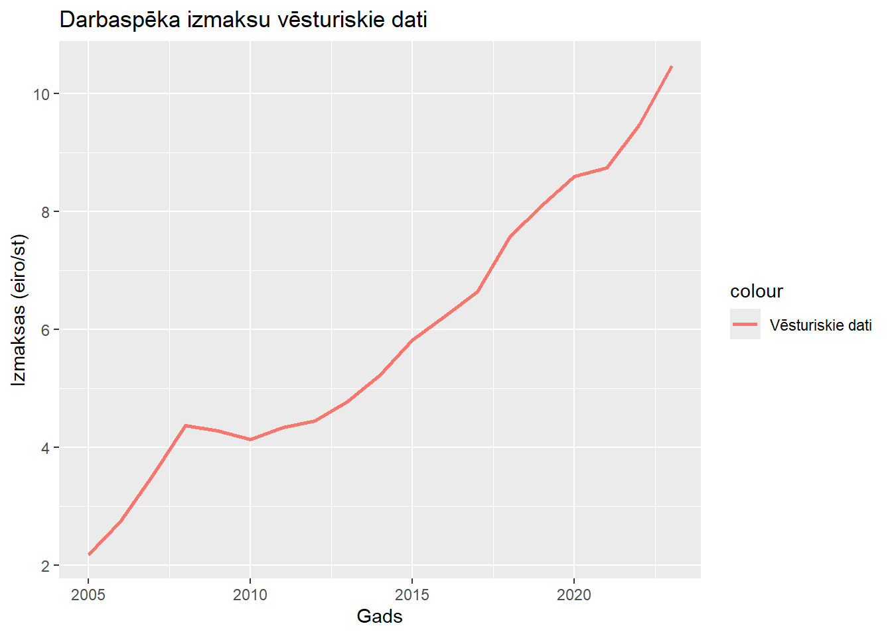
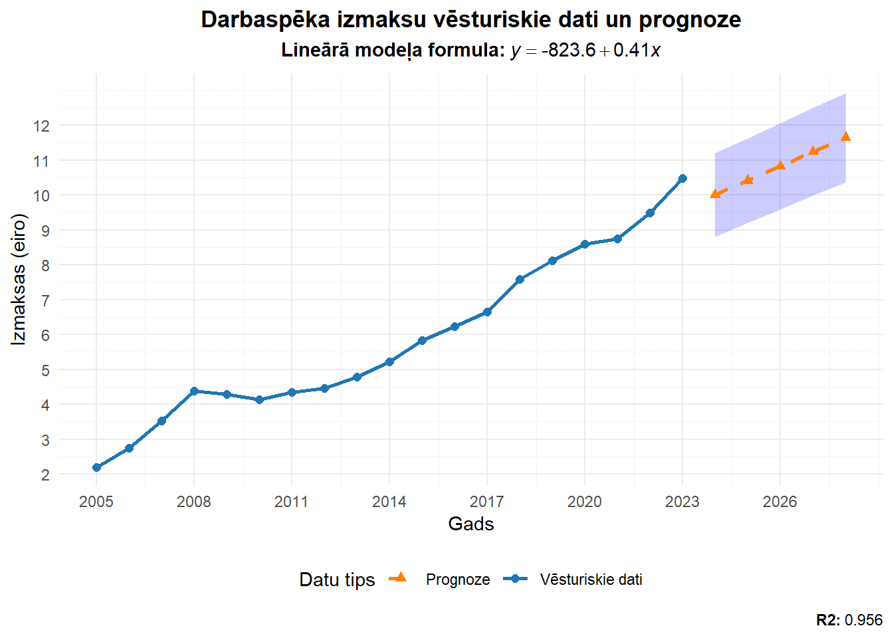

| Modelis | Formula | R² |
|---|---|---|
| Lineārais | y = -823.6 + 0.41*x | 0.96 |
| Logaritmiskais | y = -6303.54 + 829.33*log(x) | 0.96 |
| Eksponenciālais | y = exp(-147.28 + 0.07*x) | 0.95 |
| Pakāpes | y = exp(-1131.69 + 148.97*log(x)) | 0.95 |
LR klasiskās prognozēšanas metodes
Patstāvīgais darbs par laika rindu klasiskiem prognozēšanas modeļiem
Autors : Kirils Volobujevs
Sākotnējie dati
Vienas stundas darbaspēka izmaksas pa darbības veidiem (eiro) 2005 - 2023
| Gads | Izmaksas |
|---|---|
| 2005 | 2.19 |
| 2006 | 2.75 |
| 2007 | 3.53 |
| 2008 | 4.38 |
| 2009 | 4.28 |
| 2010 | 4.14 |
| 2011 | 4.34 |
| 2012 | 4.45 |
| 2013 | 4.78 |
| 2014 | 5.23 |
| 2015 | 5.83 |
| 2016 | 6.23 |
| 2017 | 6.65 |
| 2018 | 7.58 |
| 2019 | 8.11 |
| 2020 | 8.60 |
| 2021 | 8.75 |
| 2022 | 9.48 |
| 2023 | 10.48 |

[1] "Vidējā alga : 5.883 eiro/st"
[1] "Standartnovirze: 2.371"Trendu izpēte
Pārbaudot visus lineārās regresijas modeļus, ir jāsaprot, cik labi modelis atbilst datiem – jo lielāks ir determinācijas koeficients (R²), jo labāk regresijas modelis atbilst tālākajai analīzei.
Kā mēs neredzam būtisku atšķirību starp lineārā un logaritmiskā modeļa determinācijas koeficientiem, es izvēlējos lineāro modeli tālākai prognozēšanai.
Prognozes veidošana
Prognozēšanas intervāls ir konservatīvi - 5 gadi.
| Gads | Izmaksas | Datu tips | Prognoze | LCL | UCL |
|---|---|---|---|---|---|
| 2005 | 2.19 | Vēsturiskie | NA | NA | NA |
| 2006 | 2.75 | Vēsturiskie | NA | NA | NA |
| 2007 | 3.53 | Vēsturiskie | NA | NA | NA |
| 2008 | 4.38 | Vēsturiskie | NA | NA | NA |
| 2009 | 4.28 | Vēsturiskie | NA | NA | NA |
| 2010 | 4.14 | Vēsturiskie | NA | NA | NA |
| 2011 | 4.34 | Vēsturiskie | NA | NA | NA |
| 2012 | 4.45 | Vēsturiskie | NA | NA | NA |
| 2013 | 4.78 | Vēsturiskie | NA | NA | NA |
| 2014 | 5.23 | Vēsturiskie | NA | NA | NA |
| 2015 | 5.83 | Vēsturiskie | NA | NA | NA |
| 2016 | 6.23 | Vēsturiskie | NA | NA | NA |
| 2017 | 6.65 | Vēsturiskie | NA | NA | NA |
| 2018 | 7.58 | Vēsturiskie | NA | NA | NA |
| 2019 | 8.11 | Vēsturiskie | NA | NA | NA |
| 2020 | 8.60 | Vēsturiskie | NA | NA | NA |
| 2021 | 8.75 | Vēsturiskie | NA | NA | NA |
| 2022 | 9.48 | Vēsturiskie | NA | NA | NA |
| 2023 | 10.48 | Vēsturiskie | NA | NA | NA |
| 2024 | NA | Prognoze | 10.00175 | 8.803 | 11.201 |
| 2025 | NA | Prognoze | 10.41361 | 9.197 | 11.630 |
| 2026 | NA | Prognoze | 10.82547 | 9.589 | 12.061 |
| 2027 | NA | Prognoze | 11.23733 | 9.981 | 12.494 |
| 2028 | NA | Prognoze | 11.64919 | 10.371 | 12.928 |
[1] "MAPE: 115.975612"Prognozes vizualizēšana

Lineārā modeļa formula: y = -823.60 + 0.41 * xR-squared: 0.956Dinamiskā vizualizācija
Secinājumi
Analizējot datus par darbsapēka izmaksām pārtikas produktu ražošanā no 2005. līdz 2023. gadam, var izdarīt šādus secinājumus:
Vispārējais pieaugums: Darbaspēka izmaksas pārtikas produktu ražošanā ir pieredzējušas pakāpenisku pieaugumu visos gados, no 2,19 eiro 2005. gadā līdz 10,48 eiro 2023. gadā. Tas norāda uz tendenci pieaugt darbaspēka izmaksām pārtikas nozarē.
Pārsvarā stabili pieauguma tempi: Pieauguma temps ir bijis samērā nemainīgs visā periodā, ar izņēmumu dažos gados, kad pieaugums bija mazāk izteikts. Piemēram, 2009. un 2010. gadā pieaugums bija mazāks (no 4,28 uz 4,14 eiro, un no 4,14 uz 4,34 eiro), kas var būt saistīts ar ekonomiskās krīzes ietekmi.
Straujākais pieaugums: Straujākais pieaugums ir novērots pēdējās desmitgades laikā, it īpaši no 2018. līdz 2023. gadam. No 7,58 eiro 2018. gadā līdz 10,48 eiro 2023. gadā darbsapēka izmaksas ir pieaugušas par vairāk nekā 2 eiro, kas varētu būt saistīts ar darba tirgus izmaiņām, inflāciju un citām ekonomiskām tendencēm.
Iespējamie faktori, kas ietekmējuši pieaugumu: Pieaugums varētu būt saistīts ar dažādiem faktoriem, piemēram:
Inflācija un vispārējās cenu izmaiņas ekonomikā.
Augošas prasības pēc kvalificēta darbaspēka pārtikas ražošanas nozarē.
Arī valdības politika, piemēram, minimālās algas paaugstināšana vai sociālo nodokļu izmaiņas.
Prognozējamās tendences: Ja pieaugošais pieaugums turpināsies līdzīgi arī nākotnē, iespējams, ka darbsapēka izmaksas pārtikas ražošanā turpinās palielināties, lai gan pieauguma temps var samazināties atkarībā no ekonomikas situācijas.
Kopumā, šie dati liecina par stabilu un nepārtrauktu darbsapēka izmaksu pieaugumu pārtikas produktu ražošanā, kas ir svarīgs faktors ekonomiskajai analīzei un plānošanai nozarē.
Pirmskods
# Patstāvīgais darbs par laika rindu klasiskiem prognozēšanas modeļiem
# Ielādēt nepieciešamās bibliotēkas (nokomentēts, lai norādītu nepieciešamo)
library(forecast)
library(tidyverse)
library(ggrepel)
library(dygraphs)
library(tibble)
library(knitr)
library(xts)
# Izveidojiet datu rāmi ar sākotnējiem datiem
darba_izmaksas <- data.frame(
Gads = 2005:2023, # Gadu diapazons
Izmaksas = c(2.19, 2.75, 3.53, 4.38, 4.28, 4.14, 4.34, 4.45, 4.78,
5.23, 5.83, 6.23, 6.65, 7.58, 8.11, 8.60, 8.75, 9.48, 10.48),
Datu_tips = "Vēsturiskie",
Prognoze = NA,
LCL = NA,
UCL = NA
)
# Nodrošināt, ka kolonnas ir skaitliskas
darba_izmaksas$Gads <- as.numeric(darba_izmaksas$Gads)
sakuma_dati<- tibble(darba_izmaksas)
## Sākotnējie dati
#(https://data.stat.gov.lv/pxweb/lv/OSP_PUB/START__EMP__DI__DIS/DIS010/)
# Sākotnējo datu vizualizācija
kable(sakuma_dati[c("Gads", "Izmaksas")], col.names = c("Gads", "Izmaksas"), align = "l")
ggplot(darba_izmaksas, aes(x = Gads)) +
labs(
title = "Darbaspēka izmaksu vēsturiskie dati",
x = "Gads",
y = "Izmaksas (eiro/st)",
) +
geom_line(aes(y = Izmaksas, color = "Vēsturiskie dati"), linewidth = 1)## Trendu izpēte
# Lineārais modelis
lin_mod <- lm(Izmaksas ~ Gads, data = darba_izmaksas)
# Logaritmiskais modelis
log_mod <- lm(Izmaksas ~ log(Gads), data = darba_izmaksas)
# Eksponenciālais modelis
exp_mod <- lm(log(Izmaksas) ~ Gads, data = darba_izmaksas)
# Pakāpes modelis
power_mod <- lm(log(Izmaksas) ~ log(Gads), data = darba_izmaksas)
# Trendu attēlošanas Tabula ar modeļiem un R^2 vērtībām
trend_table <- data.frame(
Modelis = c("Lineārais", "Logaritmiskais", "Eksponenciālais", "Pakāpes"),
Formula = c(
paste0("y = ", round(coef(lin_mod)[1], 2), " + ", round(coef(lin_mod)[2], 2), "*x"),
paste0("y = ", round(coef(log_mod)[1], 2), " + ", round(coef(log_mod)[2], 2), "*log(x)"),
paste0("y = exp(", round(coef(exp_mod)[1], 2), " + ", round(coef(exp_mod)[2], 2), "*x)"),
paste0("y = exp(", round(coef(power_mod)[1], 2), " + ", round(coef(power_mod)[2], 2), "*log(x))")
),
R2 = c(summary(lin_mod)$r.squared,
summary(log_mod)$r.squared,
summary(exp_mod)$r.squared,
summary(power_mod)$r.squared)
)
# Noapaļo R2
trend_table$R2 <- round(trend_table$R2, 2)
# tabulas attēlošana
trend_table_tibble <- tibble(trend_table)
kable(trend_table_tibble, col.names = c("Modelis", "Formula", "R²"), align = "l")
## Prognozes veidošana
# Prognoze nākamajiem 5 gadiem ar ticamības intervāliem
# Izveidojam jaunu tabulu, priekš prognozes
forecast_years <- data.frame(
Gads = 2024:2028,
Prognoze = predict(lin_mod, newdata = data.frame(Gads = 2024:2028)),
Izmaksas = NA,
Datu_tips = "Prognoze"
)
# Papildināt ar ticamības intervāliem
forecast_result <- round(predict(lin_mod, newdata = data.frame(Gads = 2024:2028), interval = "prediction", level = 0.95), 3)
forecast_years$LCL <- round(forecast_result[, "lwr"], 3)
forecast_years$UCL <- round(forecast_result[, "upr"], 3)
# Apvienot sākotnējos datus ar prognozi
pilns_datu_rāmis <- rbind(darba_izmaksas, forecast_years)
# Izvadīt pilno datu rāmi
pilns_datu_rāmis_tibble <- tibble(pilns_datu_rāmis)
kable(pilns_datu_rāmis_tibble, col.names = c("Gads", "Izmaksas", "Datu tips", "Prognoze", "LCL", "UCL"), align = "l")
## Prognozes vizualizēšana
# Iegūt lineārā modeļa koeficientus
intercept <- coef(lin_mod)[1]
slope <- coef(lin_mod)[2]
# Vizualizācija ar ggplot2
ggplot(pilns_datu_rāmis, aes(x = Gads)) +
# Ticamības intervāli
geom_ribbon(aes(ymin = LCL, ymax = UCL), alpha = 0.2, fill = "blue") +
# Vēsturiskie dati līnija
geom_line(aes(y = Izmaksas, color = "Vēsturiskie dati"), size = 1) +
geom_point(aes(y = Izmaksas, color = "Vēsturiskie dati"), size = 2, shape = 16) +
# Prognozes līnija
geom_line(aes(y = Prognoze, color = "Prognoze"), linetype = "dashed", size = 1) +
geom_point(aes(y = Prognoze, color = "Prognoze"), size = 2, shape = 17) +
# Līnijas stilizācija
scale_color_manual(
values = c("Vēsturiskie dati" = "#1F77B4", "Prognoze" = "#FF7F0E"),
name = "Datu tips"
) +
# Virsraksts un etiķetes
labs(
title = "Darbaspēka izmaksu vēsturiskie dati un prognoze",
subtitle = bquote(bold("Lineārā modeļa formula:") ~ italic(y) == .(round(intercept, 2)) + .(round(slope, 2)) * italic(x)),
x = "Gads",
y = "Izmaksas (eiro)",
caption = bquote(bold("R2:") ~ .(round(summary(lin_mod)$r.squared, 3)))
) +
# Tēma
theme_minimal() +
theme(
legend.position = "bottom",
plot.title = element_text(hjust = 0.5, face = "bold"),
plot.subtitle = element_text(hjust = 0.5),
panel.grid.minor = element_line(color = "lightgray", linetype = "dotted")
) +
# Y ass sadalījums
scale_y_continuous(breaks = seq(1, 12, by = 1)) +
# X ass sadalījums
scale_x_continuous(breaks = seq(2005, 2028, by = 3))# Izvadīt papildus informāciju konsoles izvadē
cat(sprintf("Lineārā modeļa formula: y = %.2f + %.2f * x\n", intercept, slope))
cat(sprintf("R-squared: %.3f\n", summary(lin_mod)$r.squared))
## Dinamiskā vizualizācija
time_series_data <- xts(
pilns_datu_rāmis[, c("Izmaksas", "Prognoze", "LCL", "UCL")],
order.by = as.Date(paste(pilns_datu_rāmis$Gads, "-01-01", sep = "")) # Ensure Gads is treated as a Date
)
# izveidojam interaktīvu grafiku
dygraph(time_series_data, main = "Darbaspēka izmaksu vēsturiskie dati un prognoze") %>%
dySeries("LCL", label = "LCL", color = "blue", strokeWidth = 1) %>%
dySeries("Izmaksas", label = "Vēsturiskie dati", color = "#1F77B4") %>%
dySeries("UCL", label = "UCL", color = "blue", strokeWidth = 1) %>%
# pievienojam prognozes datus
dySeries("Prognoze", label = "Prognoze", color = "#FF7F0E", strokePattern = "dashed") %>%
# izmanām ašu informāciju
dyAxis("x", label = "Gads") %>%
dyAxis("y", label = "Izmaksas (eiro/st)") %>%
# leģendas stilizācija
dyLegend(show = "always", hideOnMouseOut = FALSE) %>%
dyOptions(
fillGraph = FALSE,
drawGrid = TRUE
)